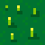

Welcome, Adventurer!
You found yourself lost in a maze full of treasures, and your only hope to survive is getting to the nearest castle. But be careful: strange creatures from the sea are coming!
Can you find the castle before your tiredness consumes you?
{% endblock %}
Can you find the castle before your tiredness consumes you?
- Move your adventurer
 using the directional keys or pressing the corresponding buttons on the screen.
using the directional keys or pressing the corresponding buttons on the screen. - You can only walk on the grass 
- Your goal is to get to the castle before you run out of time or stamina.
- You can collect stamina potions to regenerate your stamina.
- To successfully enter the castle, you need to collect all the keys
 .
. - Some mazes can automatically redirect you to a new maze after entering the castle. Use it wisely, because it's the only way you can play in these new mazes!
- Collect the gems
 to increase your score.
to increase your score.